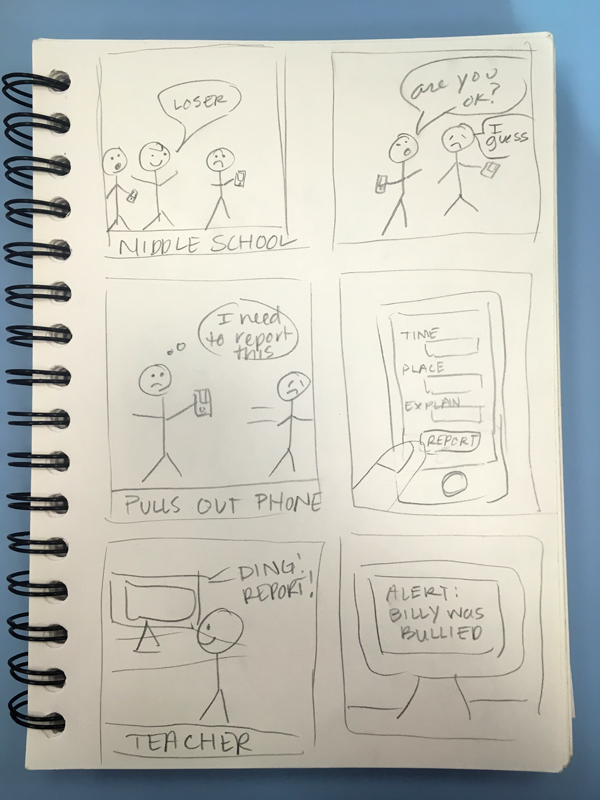
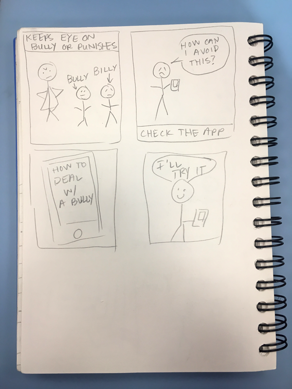
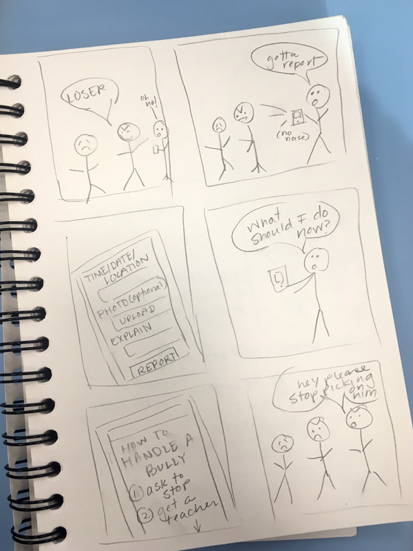
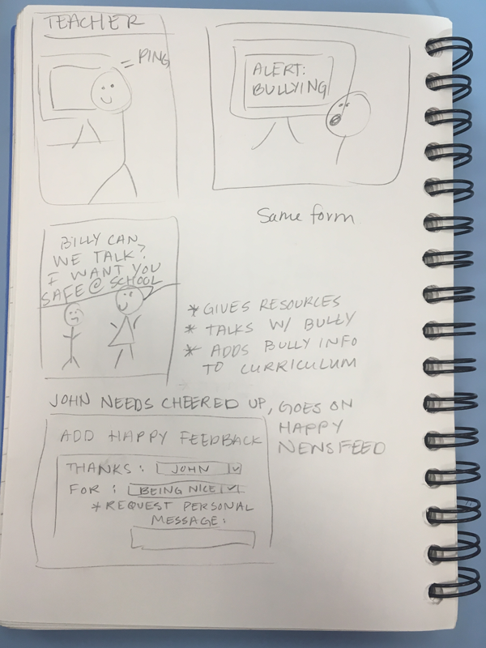

After this first storyboarding, me and my partner decided that the app needed more proof of bullying rather than taking a student's word on it. So I added the option to upload a photo. We also discussed moderation for the positive posts and I decided there would be premade dropdowns to make it more controlled and if they want a custom post only those would go to the teacher to approve.
 This storyboard focussed on adding the photo and more about the information side of the app. My partner suggested having the form for reporting and positivity be similar to save time and coding. This brought up the idea of a form that can switch between the two with a button on the top. This condenses two pages into one.
 